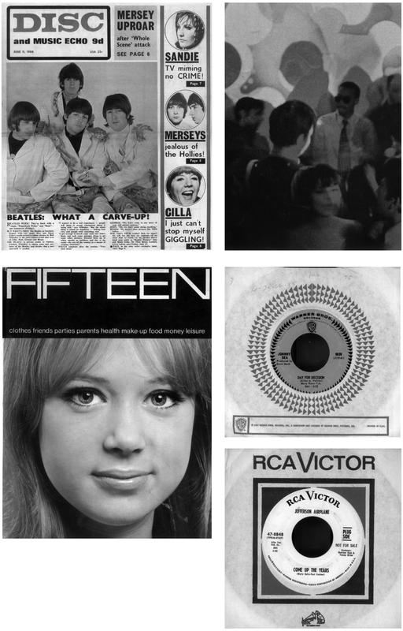
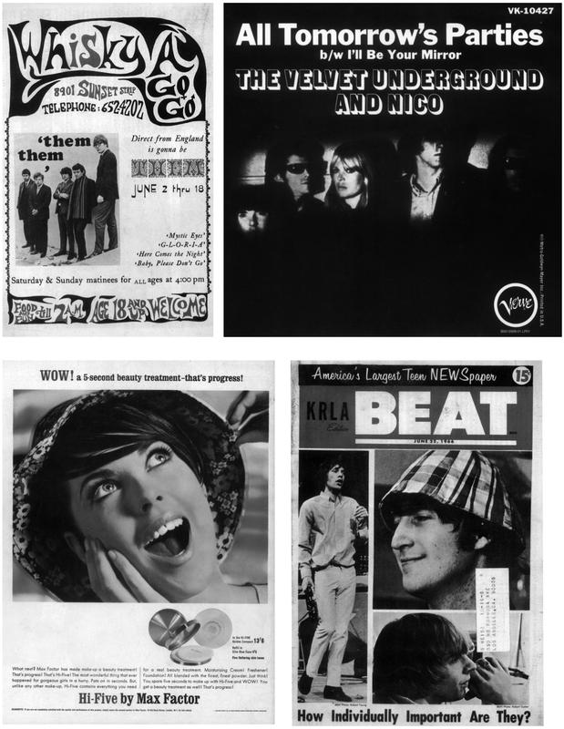

I’ll Be Your Mirror: The Velvet Underground and Warhol’s America


‘A Pop person is like a vacuum that eats up everything, he’s made up from what he’s seen. Television has done it. You don’t have to read anymore. Books will go out, television will stay. Movies will go out, television will stay. And that’s why people are really becoming plastic, they are just fed things and are formed and the people who can give things back are considered very talented.’
ANDY WARHOL, quoted by John L. Wasserman in ‘Conjurer’s Dream from Pop World’, San Francisco Chronicle, 23 May 1966
There was a new Pop Girl in spring 1966, but she was no seasoned professional, nor a sample teen elevated into instant fame. She was European, cool, uncommunicative; speaking slowly and existing in her own time. Her every move spoke of her membership of haute bohemia, just as her icy beauty disguised a certain innocence. She was an odd, contradictory presence, but nevertheless she was there, in the media glare, together with her Svengali, Andy Warhol.
On 1 June, Nico travelled to Boston with Ingrid Superstar and Andy Warhol and what the city’s WNAC-TV station hailed as ‘other glamazons from his underground movie entourage’. They had just returned from a less than successful Exploding Plastic Inevitable tour of the West Coast that had been marked by venue problems and a hostile press. Clearly, Los Angeles and San Francisco were not ready for the latest effusion from the underbelly of New York.
The reviews from San Francisco were hot off the press. ‘If this is what we are waiting for, we are going to die of boredom,’ wrote the Chronicle’s Ralph J. Gleason, who, rather unkindly, called Nico ‘the whip girl who looks like Mick Jagger in drag’. Another reviewer observed that ‘the audience was at least as interesting as what was happening on stage’, and that ‘Andy’s Girl of the Year’, Nico, ‘delivered the songs in a monotone’.
Still on the news-stands was the 27 May edition of Life, with its front-cover story ‘New Madness at the Discotheque’. Subtitled ‘Op art, mad rags and a dazzle of changing color controlled by music’, the five-page spread led with a picture of the Exploding Plastic Inevitable during their Los Angeles residency at the Trip, with Mary Woronov and Lou Reed onstage, and film of Mo Tucker and Edie Sedgwick projected onto screens behind them.
The new condition of pop was moving towards an op/pop art/Happenings environment of lights, music, dancers, films. Life called it ‘total recreation’: ‘a touring unit, created by Pop Artist Andy Warhol and equipped with movie projectors and musicians, has been playing Los Angeles before moving on to San Francisco. Unexpectedly, the clubs report that liquor is less than in conventional spots, mainly because the pandemonium takes the place of stimulants.’
This was an extraordinary level of media attention, and Nico was at the heart of it. To all intents and purposes, she was the Velvet Underground’s front person, the featured singer and the most striking presence. She tackled a 23 May Chronicle interview in a double act with Warhol, who ‘said that he wasn’t bothered by being called a phoney, while Nico said, with a half-smile, that she was in fact a total phoney. “It’s my defense,” she explained.’
Warhol, Nico and the others went to Boston to record links and introductions to a film season called ‘Pop Art Theater’ – a grand title for a season of old movies including Dick Tracy, Tarzan the Ape Man, White Savage and King Kong. WNAC-TV’s press release pushed all the buzzwords, describing its season as going ‘Camp with Pop Art Movies for the In Group’. Nico was pictured with Warhol at her most crystalline, captioned as ‘Miss Pop-Off of 1966’.
After recording the links, the New Yorkers attended a ‘Pop Art–Las Vegas Gambol party for ad agency people, press and clients’. This was ‘Pop all the way with four things going on at once from a Discotheque with a Bat Girl in the Cage, dancing, Guessing who’s In and Out on three giant rear projection screens, Gambling, Dining and watching the characters just waking around the huge armoury in costume of Batman, Superman, Lil Orphan Annie and many more.’
Nothing could have been more transcendently, transparently of the moment in June 1966.
A fragment of Nico’s presentation has survived. It begins with a station announcer: ‘Now here she is, Miss Pop Art of 1966, and your hostess for Channel 7’s “Pop Art Theater”, Nic-o!’ A huge swirling ‘POP ART’ logo fades into Nico’s face, as a record plays underneath. ‘That tune is called “All Tomorrow’s Parties”. I’m Nico and I sang it,’ she says in her somnambulist style, ‘with the Velvet Underground, the new – uh – exciting rock ’n’ roll group of tomorrow.’
The Boston visit wasn’t just to cement Warhol’s status as ‘the Peter Pan of the current art scene’. It was also to promote the Velvet Underground, who were preparing the release of their first single. This was not the standard way that pop groups went about things, but then the Velvet Underground occupied a very unusual position, being managed by Warhol and his assistant Paul Morrissey, who knew about art, film and media rather than the specifics of the music industry.
At this point, the Velvet Underground were an adjunct to Warhol’s ambitious new art project. Having announced his decision to give up fine art the year before, he had decided to concentrate on film and the coming new form, total environments. ‘I’m not doing paintings any more,’ he told interviewer Bob Reilly in spring 1966. ‘But I think I’ll glue together some of the parts of old studies I did and sell them as whole paintings to get the money.’
The Exploding Plastic Inevitable was a synthesis of film, interpretative dancing and drone-based instrumental explorations, a barrage of lights and backdrop films, ‘Screen Tests’ shot, in close-up, at the Factory, and projected many times life size. ‘Andy’s movies are the parts of a giant hypnotic machine,’ the writer Jim Paltridge observed at the time. ‘This machine spins an endless cable of steel sound.’
Deliberately provocative, an assault on the senses, the Warhol multimedia show got an enormous amount of column inches right from the off. Alerted by the publicity, and the existence of a nine-song recording session held with Norman Dolph, record companies quickly began evaluating the Velvet Underground that early spring. Some, like Atlantic, were put off by the drug songs, but Tom
Wilson of Verve Records held out for a deal. Wilson was a big name in 1966. With a background in avant-garde jazz (Sun Ra and Cecil Taylor), he was hot, with recent hits by Bob Dylan and Simon & Garfunkel. Having moved over to Verve, he was overseeing a label revamp, with a new roster that included the Mothers of Invention, the Animals and the Blues Project. A 21 May Billboard article noted his ambition to ‘build up an LP operation and establish artists with consistent LP value’.
There are accounts stating that Wilson only signed the Velvet Underground because he liked Nico. Certainly, the two had met during Bob Dylan’s May 1965 tour of the UK, having been caught by D. A. Pennebaker’s camera when Nico was unsuccessfully trying to hustle Dylan’s manager, Albert Grossman. Whatever the reason, it was a quick deal. Contracts were issued and dated 2 May, the day before the band’s first Californian date.
That month, the Velvet Underground went into TTG Studios in Hollywood to rework several numbers from the Dolph session. Verve was already thinking about a single, and decided to go with two of the four Nico songs. After re-recording ‘Heroin’, ‘I’m Waiting for the Man’ and ‘Venus in Furs’, the group double-tracked the voice on ‘All Tomorrow’s Parties’ and added a new Nico vocal to ‘I’ll Be Your Mirror’. The single was ready.
Nobody was out of their minds in preparing these two songs for release. ‘All Tomorrow’s Parties’ begins with a short guitar intro, before resolving into a Spectorian sound picture – all booming drum and foregrounded tambourine – exploded by John Cale’s repeated, droning clusters of piano notes. Nico gives an icy detachment to Lou Reed’s pitiless dissection of party culture: ‘And where will she go, what will she do / When midnight comes around?’
‘I’ll Be Your Mirror’ starts off folk-rock sweet, with two guitars intertwining in counterpoint. Nico’s voice is right up front, soft and lightly accented, slightly shaky on the longer notes. Compared to many Velvet Underground songs, the production is muted: the only hint of rock ’n’ roll is in the short guitar riffs that punctuate the verses. The mood is tender and intimate: ‘I’ll be your mirror / Reflect what you are / In case you don’t know.’
Soon after Nico joined the Velvet Underground – as a featured vocalist, not part of the group – she had a brief affair with Lou Reed. This song celebrates that moment, with Reed’s customary sharpness, and alludes to Nico’s chronic insecurity with the line ‘when the night has seen your mind’. One contemporary account has her lost in her reflection in the mirror, trying to decide whether or not she is beautiful.
There was another song about mirrors in early 1966, by a British group called Pinkerton’s Assorted Colours, but the lyric was standard romantic fare. ‘I’ll Be Your Mirror’ was something quite different, cutting deeper than most contemporary pop songs. It takes you right into the intimacies of a love affair – the intertwining of two individual psychologies and the way that two people can fill in each other’s weaknesses.
‘I’ll Be Your Mirror’ was written during the very first few months of the Velvet Underground’s involvement at the Factory, and it reflected the febrile atmosphere. Warhol was very taken with the song and suggested that, when it was cut as a single, the last phrase should be repeated as a locked groove. Clearly, it was an idea that resonated with him: ‘I’ll be your mirror / Reflect what you are / In case you don’t know.’
Reed and Warhol were fascinated by each other. In the beginning, it was an intense and creative friendship, and it’s possible to see ‘I’ll Be Your Mirror’ as a comment on Warhol’s extraordinary position in American life during 1966. Certainly, mirrors thread through the Velvet Underground’s time at the Factory: the huge mirror ball in the studio; the silver foil with which Billy Name covered the walls; the song itself, played live at the EPI dates.
Mirrors were also an integral part of the EPI’s sensory overload. Underground press journalist John Wilcock observed how, at the Dom during April 1966, ‘a colored spotlight onstage focused onto the mirror ball that revolved in the ceiling, sending pinpoints of light on predictable circuits around the room’. This revival of the 1920s nightclub/ballroom staple was not just campy fun; it was a reflection of amphetamine’s ability to send consciousness shooting off into hundreds of tiny shards.
The mirror is a highly ambiguous and powerful portal. The man-made version is polymorphous: the flat household surface; the fragmented shapes of the mirror ball scattering light like fragments of thought; or the spherical witches’ ball, so favoured by M. C. Escher, that warps the veil of everyday consciousness. It has long been used in fine art – by Velázquez, Van Dyck and Magritte, among many others – to suggest other worlds, to throw the image back at the viewer. It can be hard and precise, silvery and sibylline. It can reflect the harsh reality of the morning after or offer a window into an alternative reality, life through the looking glass – quite literally, in the case of Jean Cocteau’s Orphée, where the flat surface dissolves into ripples that allow Jean Marais to pass through to the Other Side. It can offer an affirmation of identity or be the receptacle of human vanity. It can lead the unwitting into madness – the hall of mirrors fleetingly inhabited by Orson Welles in The Lady from Shanghai.
The mirror also casts its blank gaze on the Velvet Underground’s most notorious song from the period, ‘Heroin’. The lyric does not seek to convince, proselytise or condemn; it simply reflects what it is to dice with death. The blank facade of the Velvet Underground as they played – wearing sunglasses to protect themselves against the barrage of lights – was deliberately obtuse. ‘I might be dumb, I might be smart, but you’ll never know.’
The group were abrasive and provocative, a mirror to their audiences. They quickly evoked a high level of hostility, which they used as fuel. ‘The worst that you can say about me – “sick”, “trash”, “garbage” – I most certainly am. So fuck you.’ This emanated in part from the master himself. Jim Paltridge caught this dynamic in an exchange between Warhol and ‘Clark Kent’:
Clark: Andy, did you ever get a copy of the review in the Sunday Times?
Andy: Oh, that terrible one?
Clark: I thought you’d like a really terrible review like that.
Andy: Oh, sometimes I do. I think people will come if there is a really terrible one.
Like the Wizard of Oz, Andy Warhol stood behind a dazzling array of effects – ‘It’s all done with mirrors’ – but his projections hooked into the barely expressed desires of the wider society. John Richmond observed in July 1966 that ‘Warhol is an artist in the purest and simplest manner. He sees the world for what it is: a nut-hatchery. He records the garish and the tinsel. He satirises romantic delusion by portraying the instinct as manifested in the Campbell’s Soup label.’
But, unlike the Wizard, Warhol did not claim to be what he was not. His interviews were gossipy, confrontational or completely blank. In Andy Warhol’s Index (Book), one of the three total artworks that Warhol would produce from his activity during 1966 – the other two being the December 1966 ‘Fab’ issue of Aspen magazine and The Velvet Underground and Nico album – the last two pages contain just the simple, crudely silk-screened word ‘blank’.
Behind Warhol’s impenetrable facade lurked an outsider’s fury. As a working-class gay man from the deepest Rust Belt, he had an incredible drive to assimilate – to crash the glamour world of metropolitan society, inherited wealth and artistic fame. Suffering serial humiliations and setbacks, he played the game until the point, sometime in the early sixties, when he began to achieve his goal. Then, for a brief period, he rewrote the rules. His underlying rage came out.
From 1964 onwards, the East 47th Street Factory became a mirror image of New York society, and all the more so when Warhol’s retinue was asked to smart parties – a tiny ritual of sadomasochism. Warhol’s world worked through magical inversion. What society regarded as a deficit became a benefit; no became yes. Drag acts; drug addicts; hustlers; the disturbed, destitute, desperate and degenerate; the obverse, inverse, reverse and perverse – all could become superstars.
Warhol’s high 1960s paintings and silk screens reflected the country’s dominant values back at America: sex, death, crime, celebrity, media, money, mass production. Just as the mirror works with psychology, the response to these works changed with the individual gaze. Contemporary critics were divided, if not actively hostile. Were they a put-on? Were they a critique? Were they a wish fulfilment? Or were they just there?
Warhol worked out of intuition and instinct. He was a true receptor and reflector at a crucial time in American history. He worked hard to disclaim all meaning. ‘If you want to know all about Andy Warhol,’ he told Gretchen Berg in spring 1966, ‘just look at the surface of my paintings and films and me, and there I am. There’s nothing behind it.’ But it was all there. The mirror can tell uncomfortable truths. It can show blemishes, wounds, scars – disfigurement even – to a level that it needs courage to confront.
In 1967, Jean Clay wrote about Warhol in terms of the photographic process. He was ‘a sensitive plate’ on which America recorded ‘its real face’. ‘After assimilating all the outward manifestations and mental images of American society, after wallowing in it all, he turns on us and says: “Here, this is YOU. I am just the visible product of this world: my image is YOU.” He throws back at us our own brand products, our idols, our habits – but fossilised and isolated so that we see in them a morbidity, a death which we had never expected was there.’
Like the mirror, Warhol was plastic and multiphrenic, deceptively seductive yet icily dispassionate. As he told Gretchen Berg, ‘The artificial fascinates me, the bright and shiny.’ During 1966, he was in tune with the times – their profound confusion, escalating violence and sheer mediated frenzy – in a way that he never had been before and never would be again. This was his peak. Almost unconsciously, certainly without stated intent, he became America.
‘Pop is trying to give people instant psychic distance. It takes whatever things are and turns them around to give them a mirror reflection.’
RICHARD GOLDSTEIN, quoted in ‘Before or Beyond the Slick?’, New York, February 1967
Warhol was an inveterate media scanner. Jim Paltridge’s account of the EPI’s May 1966 visit to California opens at ‘this big Hollywood-Spanish Castle’ where the troupe stayed. ‘Andy goes into the bedroom and takes a black leather motorcycle jacket and a copy of Vogue off the bed. Andy Warhol’s bed is very messy. Fashion magazines, Los Angeles Times, Variety, photographs are under and in it, taking their rightful place in Andy’s sleeping and waking hours.’
He was also a life-long hoarder, regularly throwing whatever was to hand – magazines, business letters, all kinds of ephemera – into the box of the moment. On his death, these archive boxes – hundreds and hundreds of them – were handed over to the Andy Warhol Museum in Pittsburgh. Named Time Capsules, they were catalogued and made available for researchers, representing as they do an extraordinary week to week, month to month, year to year diary of materials.
Three boxes in particular covered the year during which Warhol worked most closely with the Velvet Underground: 1966. When I went through them, they were like a complicated puzzle that had just been left where it lay. But a pattern began to emerge. There was, inevitably, a lot of material relating to the VU and the EPI: contracts, typescript interviews with Warhol and dozens of press clippings that ranged from bemused to celebratory to extremely critical.
There were multiple issues of Time, Newsweek and Life, which covered Warhol and the EPI in amongst their standard news fare, a litany of crime, murder, war and cultural confusion. The cumulative effect is of a country moving at breakneck speed into random violence, environmental degradation, materialism and its multiple discontents. In the centre of it all, bathed in the sensory overload of the EPI, stands Andy Warhol in shades, his finger touching his chin.
Warhol had been moving very fast since his arrival as an Artist in spring 1962. His life thus far had been in preparation for this moment. During the next three years, he expanded into sculpture, environmental art and film-making. He became the master of the East 47th St. Factory, an old warehouse that encompassed a variety of functions: the industrial production of silk-screen images, a set for filmed scenarios and, within limits, an open stage.
During this period, his imagery shifted from the deceptively simple reproduction of everyday objects – the Campbell’s Soup can, a dollar bill, a Coca-Cola bottle – into repeated images of mass production: not just inanimate objects like Green Shield stamps but human icons – reified demigods like Liz Taylor, Elvis Presley, Jackie Kennedy and Marilyn Monroe. Warhol understood how fame abstracted a person’s humanity and rendered them into an industrial process.
At the same time, there was always a darker undertow. Beginning with 1962’s 129 Die in Jet (Plane Crash), Warhol investigated the media’s ghoulish delight in death and disaster. Pictures like Suicide (Fallen Body), Orange Car Crash Fourteen Times, Tunafish Disaster and Mustard Race Riot made multiple copies of horrific images. The whole process was taken to its apogee in the Disaster series, which depicted an electric chair in various colour washes.
It was all there, in front of him. In Popism, Warhol describes a moment of revelation during a cross-country trip in autumn 1963: ‘The farther west we drove, the more Pop everything looked on the highways. Suddenly we all felt like insiders because even though Pop was everywhere – that was the thing about it, most people took it for granted, whereas we were dazzled by it – to us, it was the new Art. Once you “got” Pop, you could never see a sign the same way again. And once you thought Pop, you could never see America the same way again.
‘The moment you label something,’ he continued, ‘you take a step – I mean, you can never go back to seeing it unlabelled. We were seeing the future and we knew it for sure. We saw people walking around in it without knowing it because they were all thinking in the past, in the references of the past. But all you had to do was KNOW you were in the future, and that’s what put you there. The mystery was gone, but the amazement was just starting.’
In another respect, Warhol mirrored the speed of the times. The sixties were a period of openness and free experiment in art and music, and those who were able to match the acceleration of life – funded by a booming economy and a burgeoning mass media, peopled by a generation becoming aware of an international youth culture – were able to set the killing pace. The fact that he felt himself beamed into the future gave him enormous momentum.
By 1965, the immigrant boy from Pittsburgh had made it. Warhol was expanding into video and scripted films like Vinyl and Kitchen. He’d got the glamour and was beginning to shape the culture. He presided over a revolution in style and society. At the April 1965 ‘Fifty Most Beautiful People Party’, Judy Garland, Tennessee Williams and Montgomery Clift were not the true attractions; they were outshone by the new superstar, Edie Sedgwick.
In May 1965, Warhol announced that he was retiring from painting. ‘Art just wasn’t fun for me any more; it was people who were fascinating and I wanted to spend all my time being around them, listening to them, and making movies of them.’ Warhol felt that ‘the basic Pop statements had already been made’. He didn’t stop painting or making silk-screens – they were a basic money-earner – but his announcement marked a shift in his focus into movies and beyond.
His most famous event of 1965 was an unplanned Happening. In early October, Warhol travelled to Philadelphia for a major retrospective. Curator Sam Green worked on an intense publicity campaign, which included TV coverage and invitations that reproduced a Campbell’s Mushroom Soup label. He also sent out six thousand invites for a 400-capacity space. Norman Dolph was hired as DJ, while Green removed most of the art from the walls to ensure its safety.
The blank space was more like a discotheque than an art gallery. It quickly became overcrowded. To the amplified sounds of the Rolling Stones’ ‘It’s All Over Now’ and Ian Whitcomb’s campy ‘You Turn Me On’, the crowd of about a thousand people slowly boiled over. Chanting ‘We want Andy and Edie’, they chased Warhol and Edie Sedgwick up a staircase and cornered them against a closed-off ceiling, which had to be prised open to assist their escape.
Warhol was both terrified and thrilled. He had become a rock star. ‘I’d seen kids scream over Elvis and the Beatles and the Stones – rock idols and movie stars – but it was incredible to think of it happening at an ART opening. Even a Pop Art opening. But then, we weren’t just AT the art exhibit – we WERE the art exhibit, we were the art incarnate and the sixties were really about people, not about what they did; “the singer/not the song” etc.
‘I would have felt like a public relations genius if I’d thought all that out in advance. As near as I could figure, why it was all happening was because we were really interested in everything that was going on. The Pop idea, after all, was that anybody could do anything, so naturally we were all trying to do it all. Nobody wanted to stay in one category; we all wanted to branch out into every creative thing we could.’
In August 1965, Life had published Gloria Steinem’s article on ‘The Ins and Outs of Pop Culture’. ‘Do you sometimes wonder what Pop and Op Art are all about?’ she began. ‘Are you a wallflower when they play a Frug? Are you confused when you hear statements like “He’s in that Warhol bag” or “The Jerk is fab” or “The royal family’s gone kinky at last”? … Do you wonder why our foreign policy has been called Unconscious High Camp?’ Steinem’s piece was so wide-ranging and reference-saturated that it made a simple point: pop was the condition of contemporary life, and Warhol was at the very centre of this trend. One spread was made up of Warhol’s Campbell’s Soup cans adapted to reflect classic pop culture figures: F. Scott Fitzgerald, Marlene Dietrich, Liz Taylor, Groucho Marx. Another pictured a wheel of current media figures: Elvis, Robert F. Kennedy, Ringo and Andy Warhol.
She observed the accelerating turnover of styles: ‘If there is one thing that threatens to take the fun out of Pop Culture, it is this continuing speed-up. How fast can it get? Already it has created an odd problem for artists, who used to struggle a lifetime to find acceptance. Now their problem is to keep from being absorbed into Pop Culture before they have a chance to experiment and mature: to keep from being Out before they are even ready to be On-The-Way-In.’
Because of this warp speed, there was a blurring of boundaries, as previously discrete forms came together: ‘Theatre, art and literature have been combined in something called the New Environment, and that in itself requires some new definitions.’ Steinem went on to itemise the ‘Happening’, the ‘Unaltered Found Object’, ‘Junk Art’ and the ‘Underground Movie’. ‘Movies will be the next paintings,’ she predicted, citing ‘such epics as Sleep, by Andy Warhol’.
Within this climate of fusion and sense blurring, Warhol’s hook-up with an underground pop group was almost inevitable – although, in the spirit of the time, it was also an inspired shot in the dark. By 1965, pop culture was broad enough to include and exalt the avant-garde. It was also, as Steinem hinted, voracious: the constant and ever-escalating demands for new sounds, new images and new styles meant that all contemporary art was there to be plundered.
Nor was Warhol ignorant of pop music: he was well aware of the iconic and sexual appeal of its stars. His time capsules are full of early-sixties teen magazines like Stardom (‘Fabian Tells All’) and Favorite (‘Huge Super Pinup: Ricky Nelson’), in which some of the stars look not too dissimilar from the male models to be seen in his favourite porno ’zines: fly-by-night publications like Wonderboy, Mannlich: The Big Boys, Male Swinger and Teen Nude.
Popism is peppered with references to individual 45s: as a flavour of a memory, an artistic moment or to mark a particular point in time. From 1963, Warhol cites ‘songs like “Sugar Shack” or “Blue Velvet” or “Louie Louie”’ as forming part of the Factory soundtrack, along with Billy Name’s opera records. The next year, he remembers working at the Factory to Lesley Gore singing ‘You Don’t Own Me’ and Dionne Warwick’s ‘A House Is Not a Home’.
This formed an aural collage, a clashing sound environment. Remembering his routine for 1964, Warhol remarked how after a long night he would get into ‘the Factory by early afternoon. As I walked in, the radio and the record player would both be blasting – “Don’t Let the Sun Catch You Crying” mixed with Turandot, “Where Did Our Love Go?” with Donizetti or Bellini, or the Stones doing “Not Fade Away” while Maria Callas did Norma.’
The Velvet Underground were not the first musicians with whom Warhol had sought to collaborate. From mid-1965 on, he attempted to involve various New York players in his work. The Greenwich Village folk singer Eric Andersen appeared in at least one film, Space, while two hardcore downtown groups, the Holy Modal Rounders and the Fugs, were filmed and photographed performing in the Factory during July 1965. But, for some reason, none jelled.
The Velvets came from the same Lower East Side milieu but they were younger, better looking and part of the same film milieu that Warhol inhabited. As John Cale writes in What’s Welsh for Zen, the Velvet Underground’s first performances saw them extemporising ‘soundtracks, playing in front, beside or behind screens on which silent black and white movies by Jack Smith, Piero Heliczer, Barbara Rubin, Andy Warhol and many others were shown’.
Most accounts have Warhol and the group meeting up right at the end of 1965 – at the Cafe Bizarre – but there is enough evidence to suggest that Warhol was aware of the group earlier. Both parties were heavily involved with Jonas Mekas’s Cinematheque. The group played live during mid- and late 1965, being first shown as the Velvet Underground on a Cinematheque bill for 1 November, soundtracking Angus MacLise’s film Rites of the Dream Weapon I. They were also featured in a CBS news segment entitled ‘The Making of an Underground Film’, which showed John Cale, Lou Reed, Sterling Morrison and new drummer Maureen Tucker improvising a soundtrack to Piero Heliczer’s Venus in Furs. The musicians all had their faces painted, according to Morrison. ‘Maureen Tucker wore a bridal dress … The rest of us had on more conventional clothing, but I suppose it looked weird enough to outsiders.’
However it happened – and both Paul Morrissey and Barbara Rubin claimed the credit – the Velvet Underground were taken under Warhol’s wing by the end of the year. It was a good deal for them: management, new guitars and amps, possible shows and record-label involvement, and freedom of the Factory, where they would become the house band. It wasn’t as though they were inundated with other offers.
The Velvet Underground performed pretty songs of anomie; they experimented with feedback; they reflected alternative states of consciousness. So far, so 1965. Even though the group saw themselves as creatures of their time – checking out peers like the Small Faces, the Kinks, the Who, even Bob Dylan – there were a few stones in their pathway. They might have reflected the emerging drug culture, but they sang about the wrong drugs.
One of their earliest, and strongest, songs was ‘Heroin’, a dispassionate description of using the drug and what the drug took from the user. But the group was greeted with what Sterling Morrison remembered as a ‘mighty howl of outrage and bewilderment’ during the song’s first live outing, at Summit High School auditorium, New Jersey, in November. Although William Burroughs had written about it at length in several published novels, this was not a proper topic for pop music.
But Lou Reed was a reflector, a facet that he shared with Warhol. He was inspired by the outcast writers of the 1950s: Burroughs, James Purdy and Hubert Selby were right off the map, over the edge of the respectable world, but they were describing – often in deadpan, demotic prose – a recognisable, empirical reality: drug addiction, male prostitution, transvestite and gay life, at a time when all were illegal and completely marginalised and despised.
At the same time, Reed was a music obsessive, his tastes ranging from deep R&B – songs like Eddie and Ernie’s ‘Outcast’ – to free jazz – Cecil Taylor in particular – and the dreamy romanticism of doo-wop. He and Warhol bonded on their love of early-sixties chart music. Both cited as a lodestar the Jaynetts’ autumn 1963 US hit ‘Sally Go Round the Roses’, an elliptical girl group hymn that rises and falls in never-ending, cyclical waves of sadness and regret.
Reed’s project was to match the unflinching attitude of the outcast writers to pop music. This was an inspired idea for, by 1965, the rules of the game had changed. It was no longer possible to recapture the innocence of Alicia and the Rockaways’ ‘Why Can’t I Be Loved?’ The Beatles had ushered in a new mass culture, while Bob Dylan had taken a literary, beat language to the top of the charts. The serpent of self-consciousness had entered the paradise of superpop.
Pop had become more than just teen product. The music industry had usurped Hollywood’s place as the modern Olympus. Reed knew that this was the arena for his generation. In 1966, he wrote an essay, ‘The View from the Bandstand’, which stood as a credo and a statement of intent: ‘But meanwhile everything was dead. Writing was dead, movies were dead. Everybody sat like an unpeeled orange. But the music was so beautiful.’
The piece was peppered with superpop lyrics from ‘Sally Go Round the Roses’, Lee Dorsey’s ‘Ya Ya’ and Ritchie Valens’s ‘Donna’. Reed went back to his adolescence: ‘When Johnny Ace died, everyone was sad. Black arm bands in school. The early fifties, the first race music to make it to N.Y. white station. Alan Freed, the great father, clipped, fast speech and table pounding. The Jesters, Diablos, Coney Island Kids, Elica and the Rockaways [sic].’
He attacked the existing hierarchy of literary value: ‘Through all those years were these beautiful rock groups, tweeting and chirping like mesmerised sparrows, and if you weren’t dead, you psyched in now, because no one had made a good book, a good movie, just bullshit over and over. Only the music, and now Robert Lowell, up for a poetry prize without a decent word ever written. The only decent poetry of this century was that recorded on rock-and-roll records.’
Reed regarded music as the only positive force in American life, the only thing that made any sense to the young. ‘The colleges are meant to kill. Four years in which to kill you. And if you don’t extend your stay, the draft, by and for old people, waits to kill you. Kill your instincts, your love, the music. The music is the only live, living thing. Draft only those over forty. It’s their war, let them kill each other.’
It wasn’t just the Velvet Underground’s lyrics and attitude that polarised audiences. It was the way they sounded. Viola player John Cale had had a thorough schooling in the Dream Syndicate, an improv group that comprised La Monte Young, Tony Conrad and Marian Zazeela. ‘Motivated by a scientific and mystical fascination with sound,’ as Cale later wrote, they ‘spent long hours in rehearsals learning to provide sustained meditative drones and chants’.
Born in South Wales, Cale had moved to America in 1963 to take up a scholarship at Tanglewood, where he worked with Aaron Copeland and John Cage. A chance meeting with Lou Reed in early 1965 sidetracked him into pop music. ‘I was terrifically excited by the possibility of combining what I had been doing with La Monte with what I was doing with Lou and finding a commercial outlet.’
Reed had already released a record in December 1964, on Pickwick Records, a fly-by-night cheap label specialising in facsimiles of current styles. Working on Merseybeat, surfing and hot rod knock-offs, he got industry experience at ground level. The single that he recorded with the Primitives, ‘The Ostrich’ – a spoof dance number – is a masterpiece of one-note drone and vocal attitude. Cale observed its proximity to the tenets of the Dream Syndicate.
Both Reed and Cale shared a steely core of determination and a deep confrontational streak. ‘Lou and I both had high aims,’ Cale remembered. ‘We wanted to be the best band in the world and we thought we could be. We began to formulate a list of basic precepts. Lou’s lyrical and melodic ability would be combined with my musical ideas to create performances where we wouldn’t ever repeat ourselves.
‘As people our image was that we were weird, sadistic, aloof, unfriendly and nasty: that was how we always came across and how people expected us to be. We hated everybody and everything. We did not consider ourselves to be entertainers and would not relate to our audience … we never smiled and would turn our backs on the audience or give them the finger. Our aim was to upset people, make them feel uncomfortable, make them vomit.’
This chimed with both Warhol’s sense of mischief and outsider rage and the prevailing mood at the Factory. By 1965, there was a much sharper edge, as methamphetamine permeated Warhol’s entourage. Baby Jane Holzer told Jean Stein, Edie Sedgwick’s biographer, that ‘it was getting very scary at the Factory. There were too many crazy people around who were stoned and using too many drugs … the whole thing freaked me out … I couldn’t take it.’
A key early Velvet Underground song was ‘Venus in Furs’ – Reed’s lyrical synthesis of the famous novel by Leopold von Sacher-Masoch. During 1965, Warhol had explored similar territory with Vinyl, an adaptation of Anthony Burgess’s A Clockwork Orange that featured Gerard Malanga – as ‘a juvenile delinquent in leather’ – being tortured by professional sadists to a soundtrack of singles by the Kinks, the Rolling Stones and Martha and the Vandellas.
Vinyl also saw the first appearance of Edie Sedgwick in a Warhol film. During summer 1965, Warhol shot several more with her, including Kitchen and Beauty #2, in which Sedgwick, visibly wilting under the attacks of the off-camera Chuck Wein, finally snaps, ‘I wish you’d SHUT UP.’ This was celluloid gold for Warhol: those moments when his ‘actors’, placed under undue pressure, revealed more than they were prepared to and allowed a moment of reality.
This was a kind of sadomasochism, and certainly that mood was prevalent in the Factory of late 1965. Warhol’s papers include a catalogue from The Leather Man in Christopher Street, which offered high-collared jackets, wristbands, chaps, etc. for the gay market. Malanga was in the habit of going out with a whip, and it was his spontaneous dancing to ‘Venus in Furs’ at the Cafe Bizarre that helped to seal the collaboration between the group and Warhol.
In January 1966, the Velvet Underground showed up at the Factory, to be presented with their new singer. Paul Morrissey had serious doubts about Lou Reed’s ability to front a hit band, and decided to parachute in one of his contacts. Warhol always had Girls of the Year: in 1964, it had been Baby Jane Holzer; in 1965, Edie Sedgwick. As Edie was on the way out – being courted by Albert Grossman and Dylan’s entourage – Nico was the perfect candidate.
Nico had visited the Factory in autumn 1965, with a copy of her one single as a calling card. ‘I’m Not Sayin’’ was the product of her London visit earlier in the year, a sweet but slight folk rock song released on Andrew Loog Oldham’s label, Immediate. The flip was something else: ‘The Last Mile’ contained much darker overtones, a companion piece to the haunting, Oldham-produced ‘Some Things Just Stick in Your Mind’ by Vashti Bunyan.
In retrospect, it was an inspired if bizarre move. The group were not happy, but quickly adapted. Nico broadened their visual appeal: her background as a model and actress – with a short but impactful appearance in Fellini’s La Dolce Vita – made her a striking presence. As John Cale remembered, ‘Nico had a style that she picked up from Elia Kazan, who taught her at the Actors Studio: “Take your time. Create your own time.” And she did with a vengeance.’
With Nico added to up their pop quotient, the Velvet Underground began working immediately. On 3 January, they had their first rehearsal with their new singer. It was recorded, and reveals a group doing what most groups do in rehearsal: play old favourites (‘Green Onions’ and Buddy Holly tunes), while tinkering around with contemporary hits (‘Day Tripper’) and making serious attempts at new songs (‘There She Goes Again’). The pressure was on.
Warhol’s foray into pop music was prompted not only by his recognition of its cultural power, but by the possibility that this could be the key to his next artistic stage. His celebrity had resulted in an offer of a large discotheque space in Long Island, and this could be a good way to fill it. Thus the Velvet Underground were seen not just as a group but as a part of a total experience that would encompass performance – dance, mime and, most importantly, film.
During January and February, all five members of the group sat for Screen Tests at the Factory. The format was well-established: beginning in 1964, Warhol put friends, business associates, lovers and Factory visitors in front of a camera. Every subject had three minutes or so to fill, the length of a reel. Facing the blank lens was another kind of pressure, and many people found the experience discomforting. However, it could be revelatory.
Nearly five hundred Tests were shot between 1964 and 1966. The subjects included gallerists (Ivan Karp, Henry Geldzahler), poets (Harry Fainlight, Charles Henri Ford), Factory denizens (Baby Jane Holzer, Edie Sedgwick, Ondine, Billy Name, Chuck Wein) and various attractive young men, including Warhol’s lovers, such as Richard Rheem. Warhol also shot pop stars, including Donovan and Bob Dylan, who made his distaste perfectly obvious by sulking furiously at the camera.
The group’s Screen Tests were conceived from the off as background material for their forthcoming shows. They featured all five members in close-up, sometimes with everyday consumer items, like a Hershey Bar or a bottle of Coca-Cola: pop art props – or perhaps Warhol was hoping for commercial sponsorship. These were augmented by other reels showing featured dancers Mary Woronov and Gerard Malanga: see them live on stage, then see them multi-lifesize on screen. As Callie Angel observes, these pieces ‘contain notably frenetic camerawork, with rapid zooms and pans, single-framing, and deliberate jigglings and blurrings that approximated the avant-garde “noise” of the Velvets’ music and added still more layers of visual disorientation to the choreographed chaos of loud music, flashing lights, and wildly dancing bodies that constituted the EPI’.
One assembly includes a dual portrait of Malanga and Woronov – as well as the pair indulging in whip play – along with close-ups of John Cale’s eye and mouth and portraits of Reed, Cale, Tucker and Morrison. Others include Screen Tests of Salvador Dalí, Marcel Duchamp, Jane Holzer, Ivy Nicholson, Marisa Berenson, Edie Sedgwick and Susan Sontag. This was the lineage and the feel that Warhol sought.
The Velvet Underground went public during the first month of 1966. Attached to an artist at the height of his media fame, they would, during that year, play large venues, sign to a major label, record an album and release two singles. The myth is that they were despised outsiders, but the Velvet Underground were initially envisioned as a pop group. Their association with Warhol guaranteed publicity, even if wasn’t always favourable.
They played their first major date within two weeks of hooking up with Warhol. It was a bizarre event: the annual dinner of the New York Society for Clinical Psychiatry on 13 January. Warhol was invited to give a speech but opted instead to provide entertainment for the 350 or so psychiatrists and their wives, bringing along the Velvet Underground and Nico, plus a couple of dancers, and billing it as ‘The Chic Mystique of Andy Warhol’.
In Adam Ritchie’s photos from the event, you can see the group playing while the diners tuck into their ‘roast beef with string beans and small potatoes’ against the ornate decor of the Delmonico hotel, without any visual backdrop except Malanga and Edie Sedgwick – her last major Warhol appearance. Given Lou Reed’s less-than-happy experience of psychologists, one can only imagine his glee at facing his former tormentors.
Seymour Krim’s review in the New York Herald Tribune called the show ‘an electric shock treatment’ the ‘head doctors would never forget’. In the New York Times, Grace Glueck quoted several ruffled audience members: ‘a short-lived torture of cacophony’; ‘it seemed like a whole prison ward had escaped’; ‘a spontaneous eruption of the Id’. Krim quoted the Freudian Dr Marcel Helman as he left in a huff: ‘I’m ready to vomit.’
Warhol’s total environment started small. An early film of the Velvet Underground, shot by Danny Williams, shows a fresh-faced group with a minimal backdrop. The idea developed over the next month or so. Paul Morrissey and Danny Williams handled the film projections and the lights – which included patterned op art slides and strobes – while Malanga was augmented onstage by, first, Edie Sedgwick and then Mary Woronov.
In the second week of February, from the 8th to the 13th, the troupe began its first residency as a multimedia package at the Film-Makers’ Cinematheque, under the name of Uptight. Unlike Stevie Wonder’s exultant 45 (#3 in the US during March 1966), the word did not denote everything copacetic, joyous or ‘all right’: this was a feel-bad experience. In Factory slang, ‘uptight’ denoted nervousness, uneasiness, the near-the-knuckle jangle of amphetamine.
In the New York Post, Archer Winsten observed how the Velvet Underground, ‘prodigiously amplified, prepares itself in a tuning session, then produces a rhythmic beat proving that the session may not have been necessary’. What emerged for him was ‘a sense of climactic noise, exhibitionist movements, and the devil take the audience. The devil did get quite a few numbers, for they left at regular intervals before the two hour show finished.’
The Velvet Underground fit Warhol’s world like a glove. Playing in front of projections was second nature to them after the Cinematheque: as Lou Reed told John Wilcock, ‘we worked with lights and stuff behind us before we met Andy’. Their modus operandi and their attitudes to the public were the same: neither made any concessions to the audience, with the group declining to reveal their motives, preferring instead to deliver an unexplained assault.
Yet Warhol’s troupe was playing with a loaded gun. They were reflecting what was already there – the madness of America in 1966 – but the danger was that it was without a filter. This was a real-life experiment with no safety net. It was as though, in reflecting the psychic mood of the times, the Velvet Underground and the EPI were drawing all the poison, all the aggression, onto themselves. They were out to provoke, and provocation almost always brings a reaction.
When the troupe (including Barbara Rubin and Ingrid Superstar) visited Rutgers College – as invitees of the film society – they were called Andy Warhol’s Underground or Rutgers Uptight. John Wilcock was there, and recorded how they got into trouble in the college cafeteria and were nearly thrown off campus: ‘There’s something about authoritarian creeps which is triggered instantly by the tiniest glimmering of anarchistic freedom.’ He described the Rutgers show in terms of sound as environment: the Velvet Underground’s ‘most notable attribute is a repetitive, howling lamentation which conjures up images of a schooner breaking on the rocks. Their sound, punctuated with whatever screeches, whines, whistles and wails can be coaxed out of the amplifier, envelops the audience with disploding decibels – a sound two-and-a-half times as loud as anybody thought they could stand.’
At this point, the Velvet Underground were fused with the troupe. Bathed in lights and films, they were almost anonymous. Sterling Morrison remembered that at Rutgers, ‘We were all dressed in white; the effect, with all the films and lights projected on us, was invisibility.’ Like Warhol, they cultivated a blank facade: one of their forte numbers was called ‘The Nothing Song’, which ‘was just noise and feedback and screeches and groans from the amplifiers’.
Nothing, nil, nada. Like a mirror, the Velvet Underground and Warhol were showing America a truth that it did not want to face. Although they did not start the war in Vietnam, although they did not produce or sell heroin, although they did not create cultural alienation, they got the blame. ‘One of his constant themes has been boredom, ennui, stagnation,’ John Wilcock wrote of Warhol. ‘It is a subject he has endlessly explored, exploited, exploded.’
The polarisation continued during March and April. Ingrid Superstar remembered how ‘part of the audience went berserk’ during the 12 March show at the University of Michigan, in Ann Arbor: ‘There were a few hecklers. They’re all a bunch of immature punks.’ Two weeks later, they played the upscale 20th Anniversary Party for the Paris Review. Frank Sinatra walked out, while – as Mo Tucker remembered – the comedian Dick Gregory called ‘us either “trash” or “garbage”.’
The Exploding Plastic Inevitable was launched with a month-long stint at the Polish Cultural Institute in St Mark’s Place. This was perhaps the only time that the Velvet Underground and the troupe would have a secure environment. ‘The Dom was an unused, huge hall with a nice high stage, nice high ceilings and a balcony,’ Sterling Morrison told Ignacio Juliá. ‘A wonderful location, perfect. When we opened the place, there was no East Village.’
What’s usually called ‘the Dom’ was in fact the hall above the Dom Bar, which was run as the Open Stage. In What’s Welsh for Zen, John Cale remembered the venue’s unpromising nature: ‘You trudged upstairs to this place that smelled of urine. It was filthy and had no lights in it, but Andy took it over and turned it into something totally different. He projected films all over the wall behind us and we had slides projected onto another wall shown through gauze.’
After three months, Warhol’s multimedia environment finally found its full expression. As the ad in the East Village Other stated, it included ‘Superstars Gerard Malanga And Mary Woronov On Film On Stage On Vinyl: Live music, dancing, ultra sounds, visions, lightworks by Daniel Williams; color slides by Jackie Cassen, discotheque, refreshments, Ingrid Superstar, food, celebrities, and movies, including: Vinyl, Sleep, Eat, Kiss, Empire, Whips, Faces, Harlot, Hedy, Couch, Banana, Blow Job, etc., etc., etc. all in the same place at the same time.’
At the Open Stage, the Velvet Underground attracted a sympathetic audience from the off. Seven hundred and fifty people attended the opening night, while the takings for the first week totalled $18,000. As Lou Reed told Bruce Pollock in 1975, it was a show ‘by and for freaks, of which there turned out to be many more than anyone had expected, who finally had a place to go where they wouldn’t be hassled and where they could have a good time’.
The residency was well covered by the Village Voice, the New York Times and the East Village Other. John Wilcock thought that ‘Art has come to the discotheque and it will never be the same again.’ Clearly, this was something totally radical, the Velvet Underground’s drones and feedback combining with the lights’ sensory assault to create an atmosphere described by The Exemplar as ‘everything occurring simultaneously’.
Long-time supporter and collaborator Jonas Mekas was the most fulsome and lucid: the Velvet Underground performances at the Open Stage ‘provided the most violent, loudest and dramatic exploration platform for this new art’, he wrote. ‘Theirs remains the most dramatic expression of the contemporary generation. The place where its needs and desperations are most dramatically split open … At the Plastic Inevitable it is all Here and Now and the Future.’
The same week that the Norman Dolph acetate was cut, Newsweek published its 25 April cover story on ‘Pop’, which ticked all the contemporary boxes: Batman, camp, Dadaism, mod fashions, while highlighting Warhol and the EPI. ‘What’s happening now is happenings – where music, dancing, movies, everything happens at once and assaults all the senses.’ Nico was captioned ‘Pop girl of ’66?’
A few days after the end of the season at the Dom, the Velvet Underground, Warhol and members of the troupe flew out to California for a two-week residency at the Trip, on the Sunset Strip. By then, the EPI had developed into a full-on barrage of flashing lights, multiscreened films, sadomasochistic mime and music amplified to the point of pain. This was total envelopment. As Warhol stated in Newsweek, ‘I guess it’ll all get so simple that everything will be art.’
The EPI was the most fully worked-out staging, up to this time, of the inexorable high-sixties pop drive towards the dissolution of hierarchies, linear perception and overt meaning. By 1966, many strands of art, music and entertainment were all coming to the same point by different means: the total focus on the instant that is the hallmark of many Eastern religions; the Happening; the drug experience; the ecstasy of dancing.
Only the multimedia pop extravaganza could convey this dissolution and, in early 1966, the idea was developing in Los Angeles, San Francisco and London. The EPI was way ahead of anyone, not only in terms of sophistication but also press attention. This resulted in some plain old regional hostility, as different cities vied to become the new international centre of pop, and the Velvet Underground walked straight into the centre of the storm.
‘The first time we went out to the West Coast was an amazing experience,’ Sterling Morrison told Ignacio Juliá. ‘We liked it a lot, but it was very intimidating also, because musically the West Coast was an organised force trying to predominate in the pop scene. I remember we were in a rented car going back from the airport and when I turned on the radio the first song that came out was “Monday Monday”. I thought: “I don’t know, maybe we’re not ready for that sort of thing yet, to be taking these people on, right in their own backyard.”’
The first night at the Trip was packed with celebrities and the curious. KRLA Beat covered the event with an innovative montage of shots from the show and copy that accentuated the freak angle: ‘The Velvet Underground should go back underground and practice’ (Barry McGuire); ‘It’s like eating a banana-nut Brillo pad’ (David Crosby, the Byrds); ‘It will replace nothing, except maybe suicide’ (Cher). It was, ran the headline, ‘A Happening!’
Two nights later, the Exploding Plastic Inevitable received its first major setback. On 17 May, Variety ran a story on the closing of the Trip due to a legal dispute relating to the wife of one of the operators, who sued for $21,000 ‘allegedly overdue on a promissory note’. Caught in the middle was ‘Andy Warhol’s Velvet Underground’, who in turn sued the Trip’s owners for the balance of their contract: $3,000.
This incident has been presented as an example of West Coast hostility to the VU, but, quite apart from the actual dispute between the Trip’s operators, there was another possible factor. In his book Riot on Sunset Strip: Rock’n’Roll’s Last Stand in Hollywood, Domenic Priore speculates that the EPI were an early victim of the concerted city and police campaign to clear the Sunset Strip of clubs and teens, an operation that would explode later in the year.
Whatever the reason, the EPI were forced to remain in Los Angeles for the duration of their original contract in order to receive the money due. Jim Paltridge visited the group at the Castle, the Hollywood Hills mansion inhabited by Lisa Law, Severn Darden and others, where Dylan had stayed in January. The VU are ‘passing the time, listening to electronic music, writing poems, reading, bopping. There is plenty of time to pass.’
Warhol, meantime, goes to the Ferus Gallery, where they have an installation of his helium balloons, and reads EPI press, arranges the WNAC-TV contract and handles interviews:
TV reporter: Andy, what kind of following do you and your friends have?
Andy: (looking at Nico, his thin bubble-gum fingers caressing his lips)
Gerard [Malanga]: You mean who is following us?
Andy: (softly, amused) The FBI?
The real hostility began in San Francisco, where the EPI arrived on 27 May for three nights at Bill Graham’s Fillmore Auditorium. The first signs were encouraging. The San Francisco Chronicle ran a favourable interview on the 23rd. On the 27th, the paper printed another interview by columnist Merla Zellerbach, who faithfully reproduced bons mots like, ‘We’re pop people, formed by television.’ Asked to explain the EPI, Warhol simply said, ‘It’s a totality.’
That same day, Life published its cover story, ‘New Madness at the Discotheque’, but the EPI did not go down well with the cheerleaders of the San Francisco scene. On the 30th, the Chronicle published two critical pieces about the Fillmore engagement. Joan Chatfield-Taylor wrote a gossipy account of the audience, while Ralph J. Gleason laid the hostility bare: ‘It was all very campy and very Greenwich Village sick.’ Warhol’s films were ‘the triumph of monotony into boredom’, and the EPI was ‘the same principle applied to a rock ’n’ roll dance’. The Velvet Underground were ‘dull, behind at least a dozen local groups in interest’. The whole Barnumesque con was ‘nothing more than a bad condensation of all the bum trips of the Trips Festival of last January … Camp plus con equals nothing. You may sell the sizzle, but you can’t eat it, only the steak will do for that.’
And here was the rub. It was the traditional civic distrust of New York placed into a new context. Gleason was a passionate writer about music and a booster of the new and exciting, but it was vital for him to put the EPI down to elevate the whole San Francisco scene. And this pattern would be repeated with the VU’s nearest competitors: the Mothers of Invention, signed to the same label, Verve, and who opened for the EPI at the Trip.
In some ways, the Velvet Underground and the EPI asked for it: they were not operating by the rules of the arena that they had chosen to work in. The music industry and its commentators valued sincerity. Neither they nor Warhol were in the business of explaining their ideas. This in turn led to misinterpretation and reflexive hostility. Certainly, the EPI felt unwelcome in San Francisco and reflected that back at the section of the audience who were predisposed that way.
Mary Woronov caught the utter lack of comprehension between the two cities: ‘We spoke two completely different languages. We were on amphetamine and they were on acid.’ Yet there was a problem with this amphetamine acceleration. Gloria Steinem had already observed the dangers of pop culture’s ‘continuing speed-up’ in the wider culture. The VU were ahead of the pack, but, just as their first single was readied for release, their momentum was beginning to slip.
* * *
‘TV reporter: Andy, as a leader of youth (Andy smiles), do you feel any responsibility toward them?
Andy: Oh … I …’
JIM PALTRIDGE, ‘Andy Out West’, Daily Californian, 10 October 1967
In the spring of 1966, Andy Warhol was the most famous artist in America, but he wasn’t making art in the traditional sense of the word. The Factory was an atelier: it functioned both as an assembly line of large-edition silk-screened artefacts and an arena, a meeting place where the unexpected could occur. Warhol was not a tortured, lone genius like Jackson Pollock; he had become an impresario, a wizard, a creator of worlds.
His ‘retirement’ from painting officially sealed the process, although in fact Warhol would continue to quietly produce individual portraits to raise money. 1965 had been principally taken up with the production of silk-screens, a sequence of films and the achievement and maintenance of celebrity. From the beginning of 1966, Warhol’s principal focus would be the Velvet Underground and his total environment discotheque.
In April, Warhol held his first major art show of 1966 at the Leo Castelli Gallery. Called ‘Cow Wallpaper and Silver Clouds’, it contained just that: a wall of brightly coloured wallpaper with a magenta maternal image of a cow printed on yellow, together with another room of silver helium-filled balloons that floated around the space depending on the air flow. Encouraging play and involvement, the reflecting surfaces mirrored the EPI’s constant shifting of light and image.
In commercial terms, the show was a flop: all that there was to buy were slices of cow wallpaper and slowly deflating silver balloons. Reviewers called it ‘an embarrassment’ or an example of ‘banality’, but the show generated enormous publicity. The ‘Pop!’ issue of Newsweek quoted Castelli’s director, Ivan Karp, talking about the wallpaper – on sale at $75 a cow – as ‘an example of repetition in its most vicious form’.
It also furthered Warhol’s celebrity: he was all over the Newsweek ‘Pop!’ article, in photographs, in copy about his various activities and in quotes like ‘Intellectuals hate Pop. Average people like it. It’s easier to understand.’ Indeed, the cow wallpaper marked the final stage of Warhol’s 1963 revelation: art had become indistinguishable from a factory process, from everyday, useful consumer products. It had become the environment.
In spring 1966, Warhol was thirty-seven: middle-aged. But he was curiously ageless in his silver wigs, striped turtlenecks and heavy boots. Indeed, that very look was an attempt to defy time and gender. ‘When I was young I always wanted to look older,’ he told Bob Reilly, ‘and now I’m looking older I want to look younger. So, uh … Edie’s hair was dyed silver, and therefore I copied my hair because I wanted to look like Edie because I always wanted to be a girl.’
Being gay liberated Warhol from the traditional ways of growing older. He was, after all, the ‘Peter Pan of the current art scene’. In the Factory, he surrounded himself with younger people and acted younger than his years. He became part of the gang he never had during his isolated adolescence in Pittsburgh. But that isolation had stunted him. His relationship to his protégés would never be equal: Warhol functioned as a king disposing favours on his court.
As most of those drawn into the Factory would discover, involvement with Warhol was complicated and, although exciting and in some cases empowering, not always benign. If you wanted to make art, dance, perform, make films, write pop songs or just be yourself in a flagrant manner, then here was your opportunity. But you might or might not get paid, and you would struggle to get credit.
The Factory was a hothouse of forced development, with every tic and foible mirrored by the blank eye of the camera lens. Warhol was firmly at the centre of this world and he ruled by the giving and withholding of affection. Desiring and receiving love and attention in the widest sense, he did not always reciprocate, and the arbitrarily flickering current of his gaze dominated the Factory as surely as any heavy-handed imposition of control.
This was not a place for the sensitive or the open-hearted. The increased use of amphetamine made people more paranoid and quick-tempered. Those who thrived in this atmosphere were tough and had a function: the Velvet Underground were the house pop group; Billy Name was the manager of the Factory building; Paul Morrissey was Warhol’s principal collaborator on the films; and Gerard Malanga was the silk-screen assistant, sexual bait and EPI dancer.
Woe betide you if you were unsure of yourself or failed to find a role. The Factory crowd could be merciless, as cinema-goers witnessed later on in the year when Ondine – in his role as the Pope – exploded at Jonas Mekas’s friend Ronna Page. Warhol gave no moral guidance in these matters; everything was to be recorded, the more humiliating the better. Because it was a slice of real life, not something staged. But then, a mirror does not intervene; all it does is reflect.
Elenore Lester described Warhol’s emotional blankness that year in a major New York Times profile: ‘Andy’s boys and girls find their way to him, the neglected, rejected, overpsychoanalysed children of the rich, and the runaways from jobs as supermarket check-out clerks in the bleak suburbs of New Jersey. They find their way to the enchanted silver playroom on East 47th in Manhattan, to Mother Andy – neutral, cool and withdrawn in goggles and leather jacket … He listens to each one, watches each one, an open shutter.’
Warhol’s interest in teenagers was multifaceted: he was fascinated by the teenage market as an exemplar of the Now; he was fascinated by the appeal of pop stars as the sixties equivalent of the Hollywood icons he had idolised in his own teens; he enjoyed and exploited the energy of youth in his workplace; he was interested in their problems; he was also fascinated by sexual images of younger men and took some real-life examples – usually men in their early twenties – as his partners.
At the beginning of 1966, his lover was Danny Williams. A film editor who had worked on the Maysles brothers’ first feature, Anastasia, Williams was sensitive and talented. Warhol gave him a Bolex, with which he shot films: portraits of Billy Name and the artist Harold Stevenson, as well as a startling sequence of orgiastic dancing. From early 1966, his visual and spatial awareness was invaluable in creating the lighting effects for the Exploding Plastic Inevitable.
For the mass media, Warhol signalled Youth. In early 1965, Time hired him to design the cover for their latest youth survey – a mass-market magazine staple. ‘Today’s Teen-Agers’ is a classic design, a grid of seven young men and women, each marked out in a different colour, all caught in a moving sequence of eight photo-booth poses. There are three women and four men, one of whom is African American. All are in motion – playful, happy, sad, signifying.
Having experienced a kind of mini A Hard Day’s Night at the October 1965 Philadelphia Happening, Warhol wanted further access to this new teenage world. Hooking up with the Velvet Underground seemed the perfect way to achieve this. Indeed, Jim Paltridge’s fly-on-the-wall account of the Exploding Plastic Inevitable in California captures Warhol’s delight at being bathed in youth. At the Fillmore, the crowd included a cross-section of current teen types: ‘Lots of teenyboppers; hairdressers-on-leave and their dates, smart hippies and sloppy hippies; Junior League members, looking uncomfortable in their phosphorescent all-vinyl pants suits are all milling about in the lobby.’ Paltridge concludes with a vivid snapshot: ‘On the balcony a crowd forms around Andy. Four boys in electric paisley shirts and tight red pants are seeking his favour.’
Warhol was also, literally, on sale to teens. Gloria Steinem noted the lightning-fast crossover between fine art and the mass market, exemplified by the feeding frenzy that surrounded Bridget Riley’s first New York show in March 1965. A serious, thoughtful artist, Riley was appalled when she ‘was driven from the airport down Madison Avenue and to my amazement I saw windows full of my paintings on dresses, in window displays, everywhere. My heart sank.’
In high summer 1965, the American Greetings Gallery had held an exhibition of ‘Posters by Painters’. The catalogue cover showed ‘Liz by Andy Warhol’, while the essay inside talked of the fine art/commercial poster lineage established by Toulouse Lautrec, and the opportunities for the poster as ‘a mass communication device’. The artists included Fernand Léger, Roy Lichtenstein, Henri Matisse, Mucha, Joan Miró, Picasso and, last but not least, Andy Warhol.
In the spring 1966 issue of Datebook, there was a feature entitled ‘Decorate with Art Posters’. The copy noted how the fad for posters had spread to the high school: ‘On the walls of rooms of the most aware teenagers all over New York you’ll find gallery and museum posters announcing exhibitions of such leaders in the op and pop art world as Lichtenstein, Warhol, Rauschenberg and Riley.’ On sale for $5 were two Warhol posters, Liz and Flowers.
Images and stories about teens percolate through the clippings in Warhol’s 1966 boxes, partly because he and Morrissey were seeking to promote the VU and the EPI within a teen context. Whether intentionally or not, the clips reflect a shift in youth culture that mirrored the news: Vietnam, Black Power and race riots, James Bond-type spy weapons, ecological pollution and bizarre crimes of violence (‘Murder on LSD?’).
If Time had asked Warhol to create his ‘Today’s Teen-Agers’ cover a year later, his subjects would have looked like the sullen kids featured in ‘Children’s Village’, a Newsweek story from 23 May 1966: ‘lank-haired Mods from Mineola and leather-jacketed Rockers from Rockaway, a covey of Byrds, several dozen Rolling Stones, and a multitude of Sonny and Cher’s. They appear, on the average, to be about 16 but a disconcerting percentage are scarcely 12 years old.’
The report noted how the Greenwich Village kids managed, in the midst of one of the world’s greatest cities, to be exquisitely bored: ‘For the teen-agers, the 2-square-mile area loosely bounded by the Hudson River, Broadway, Spring and Fourteenth streets serves as one big corner drugstore. Surprisingly enough, they come because there is no place else to go. “For a kid under 18,” says 14-year-old Patti Meyers of Queens, “New York is the draggiest city in the world.”’
In Greenwich Village, in Chicago’s Old Town, in Los Angeles’s Sunset Strip, in San Francisco’s Haight-Ashbury the kids were taking over the streets. The innocent joy of superpop had gone. The blank and provocative facade of the Velvet Underground was mirrored and amplified by the Rolling Stones’ raging ‘Paint It, Black’ and the sullen, suspicious glares of the teens caught in the light of the mainstream media.
The miasma of violence that permeated the Factory and the Exploding Plastic Inevitable was mirrored in the wider culture’s fascination with teen violence. In April 1966, a Village Voice profile of the writer Anthony Burgess zeroed in on A Clockwork Orange, which offered, in the interviewer’s words, ‘an hilarious and somber prophecy of a world dominated by teenage gangs, a kind of comic cross between 1984 and The Wild Ones’.
During 1966, fiction became fact, and Warhol clipped it. In a 6 May article entitled ‘Addenda to De Sade’, Time reported on the trial of a middle-aged woman, Gertrude Baniszewski, together with three of her children and two neighbouring ‘teen-age’ boys. They were accused of causing the death of a sixteen-year-old girl, Sylvia Likens – ‘a pretty lass who liked the Beatles and roller skating’ – who had been left in their care while her parents ‘traveled the Midwest fair circuit’. The torture started when Paula Baniszewski hit Sylvia on the jaw. Gertrude began slapping her and, when the girl did not complain, the two neighbours and son John began ‘the laceration game’: burning Sylvia with matches and cigarettes, whipping her with a heavy leather belt. The family treated her like a slave, and she was reduced to picking scraps from a garbage can. At her death, her body ‘bore an estimated 150 burns, cuts, bruises and other lesions’.
Warhol became obsessed by a sensational teen murder case, the Tucson Murders. When Charles Howard Schmid, Jr went on trial in March 1966, he became a new kind of creature from the id, a psycho-killer prowling boom-town teenage anomie: ‘Among the odd collection of restless, thrill-hungry teenagers who hang out in the garish juke joints and drive-ins along Tucson’s East Speedway Boulevard, swarthy blue-eyed “Smitty” commanded adoration and terror.’ Quoting a then popular song by the Changin’ Times, ‘The Pied Piper’ (co-written by Artie Kornfeld, the future promoter of Woodstock), Time’s Robert Moser posed Schmid as the narcissistic, charismatic hero to a section of the city’s bored, restless, disenfranchised youth. At twenty-three, he was a bit older than his followers, a fine athlete who had never quite adapted to the world outside high school and who cultivated a bizarre image.
This was Leopold and Loeb projected forward into the pop age. Schmid had ‘idly wondered if [he] could kill someone and get away with it’. Like a Warhol superstar, he made himself over, stuffing three or four inches of rags and tin cans into his boots to make him taller. ‘He dyed his hair raven black, wore pancake make-up, pale cream lipstick and mascara.’ Most curiously, he wore a large beauty spot on his cheek, marked with grease.
Dominating a group of younger and impressionable teens was not enough. Schmid’s power games led to not one murder but three, as Aileen Rowe and sisters Wendy and Gretchen Fritz were taken out into the desert and bludgeoned to death. It took a while for their disappearance to be taken seriously, as at least fifty teen runaways a month were reported to the Tucson police. The case was cracked when one of Schmid’s helpers, Richie Bruns, confessed.
The arrest and court pictures of Schmid were genuinely weird and haunting. After reading Robert Moser’s long article about the boredom in Tucson, Warhol commissioned Ronald Tavel to write a script based on the case, called Their Town. As Tavel later recalled, Warhol’s ‘attention was nailed from the start with the fact that “the townspeople”, as he put it, “knew about the murders and never said anything”’.
The maelstrom was beginning to swirl around Warhol. The S&M flavour of the Exploding Plastic Inevitable was seen as part of the whole ‘campy’ and ‘sick’ pop trend that had been kick-started in January 1966 by ABC’s Batman, a cartoon-slick serial with pop art violence – sudden on-screen captions stating ‘Zap!’, ‘Pow!’ and ‘Zok!’ – and villains like Catwoman, who in her leather outfit was an amped-up version of Emma Peel in The Avengers.
Camp itself, thanks to Susan Sontag’s famous Partisan Review essay, had become a major mid-sixties obsession. Gloria Steinem had noted just how important it was ‘as a kind of early-warning system for Pop’. Adding a sidebar called ‘A Vest Pocket Guide to CAMP’, she also brought out the gay influence: ‘Homosexuals, who always have a vested interest in knocking down bourgeois standards, are in the vanguard of camp, although no longer its sole custodians.’
Steinem was cool and knowing, but middle America was not. Within a society where homosexuality was still illegal, the linking of camp and pop was enough to engender a backlash. Many of the hostile articles on the EPI contain hints of prejudice, but the most extreme was an April Village Voice piece by Vivian Gornick that accused the Velvet Underground and Warhol of being part of a homosexual conspiracy to control US culture.
Several readers retorted. Gregory Battcock called her response ‘prejudicial in the extreme and insulting to any cultured person’. Harriet Zwerling noted that ‘camp is sweet and sugary … but Selby, “Flaming Creatures,” and “Scorpio Rising” are not. They are not camp, anymore than is The Story of O. They are children of the violent and the dark, like the high black boots we are wearing and the shiny vinyl trench coats. Watch for the leather underwear next.’
Warhol’s campily violent miasma was in sync with these times, something that was noted by an article in the May 1966 issue of society magazine Town & Country. In the feature ‘Selective Panel Casts “In Cold Blood”’, several ‘leading columnists and one pop artist’ chose various public figures to play the leading characters in a potential film of the real-life murder story made famous by Truman Capote’s infamous book – an immediate best-seller on its publication in January 1966.
To be cast were the two killers, Dick Hickock and Perry Smith; the four victims, Mr and Mrs Clutter, Nancy and Kenyon Clutter; and the investigator, Al Dewey. Alan Pryce-Jones chose Warhol to play Dick Hickock, while Warhol himself entered the joke. As the two killers, he chose John Cale and Maria Montez. As for the victims, the Clutter family, he picked Gerard Malanga, Mary Pitt, Ingrid Superstar and Lou Reed.
A couple of months later, the July issue of Mademoiselle magazine featured a discussion that aimed to ‘shed light on the present murkiness that surrounds the hero image in 1966’. Among the guests were comparative mythologist Joseph Campbell, reactionary commentator and L’il Abner creator Al Capp, New Yorker staff writer Renata Adler and David Newman, co-author of ‘the new Broadway hit “It’s a Bird … It’s A Plane … It’s SUPERMAN”.’ Campbell identified the ‘negative hero’ as a person who ‘takes pride in failure’. This very contemporary type formed ‘a growing minority that may presently be a majority. The survival-of-the-fittest law no longer operates.’
Newman: Who are those negative heroes?
Campbell: Herzog, Kafka’s heroes.
Adler: The perennial loser. The Andy Warhol cult. The slipshod, ugly, talentless …
Capp: Warhol a hero? To whom?
Adler: It’s the American success story in reverse. In high school the class president was everything. Then at a given moment, all the losers, all the people who had elected the president, the prom queen, suddenly noticed there were more of them than anybody else. All the complete wallflowers – the camp crowd – whom nobody ever danced with, found each other!
Newman: Andy Warhol is not a hero; he’s a celebrity.
Adler: You’re right. But celebrities are heroes to some people.
During 1966, the demands of the oppressed became more and more strident. Already riven by the civil rights movement and the Vietnam war, America had to deal with a wave of generational assertion such as it had never experienced before. It was not only black Americans and women who wanted more but teenagers as a class and, behind them, the losers, and, behind them, the biggest outcasts of all – the queers.
Things were being turned upside down, and the most visible symbol of this disturbing change was a wig-wearing, middle-aged artist who barely spoke in public. In summer 1966, Warhol was both channelling and reflecting America’s violent spasms, just as hostile critics like Archer Winsten had intuited: ‘It is even possible that the more Andy kicks his audience in the teeth, the more he shovels nonsense into its hanging-open mouth, the more they like it.
‘This is a strange taste,’ Winsten concluded, ‘but we live in strange times.’
* * *
(Background audio: Factory atmosphere, The Velvet Underground and Nico album plays – ‘I’m Waiting for the Man’ followed by ‘Femme Fatale’)
Alan Rinzler: We wanted to talk about the book. Did you look at it?
Nico: The product of the – aaah – underground, is that it?
Alan Rinzler: It’s supposed to be emblematic of the world of Andy Warhol. It’s Andy’s book. For the rest of the world.
Nico: For the rest of the world?
Alan Rinzler: Outside of New York.
Nico: The beginning of the world. Because I think that the rest of the world is us.
Transcribed audio from the flexidisc contained in the Index book, 1967
On 6 July 1966, Nico wrote to Andy Warhol from Ibiza. ‘Dear Andy,’ she begins, ‘I had a long dream about you last night & that got me kind of worried – maybe you’re thinking that I’m not coming back at all.’ She complained about ‘being extremely nervous these days’ and having ‘nothing important to do’. All she could think about was ‘coming back over’ as soon as she could: ‘maybe next week???’ But what was she returning to?
Written entirely in capitals, her letter is filled with exactly the kind of demands from which Warhol would have shrunk: ‘When does this job start & where exactly? Has the record come out yet? I still have not received the M.G.M. contract. Is everything dissolving? Lou sounded rather positive about everything – he said that he was looking for a place for me to stay – I hope he is not into these Placidyl pills again in order to survive his ego.’
During the spring, the Velvet Underground and Nico and the Exploding Plastic Inevitable had been way ahead of the pack but, from early June, their momentum stalled. The troupe’s hostile reception during their Californian stay had cast a malign spell. After appearing on WNAC-TV, 1966’s ‘Pop-Off’ girl had departed for Ibiza, while Lou Reed – after shooting up some bad speed in San Francisco – went into hospital for six weeks with a severe case of hepatitis.
Warhol readjusted his focus. From June onwards, he and Paul Morrissey began a renewed burst of filming. Among the material shot over the summer was the Hanoi Hannah segment, scripted by Ronnie Tavel and featuring Mary Woronov as a hardcore politico dominatrix; Their Town, featuring new Warhol discovery Eric Emerson, along with Woronov, Ingrid Superstar and International Velvet; and The Pope Ondine Story, with its explosive denouement.
The Velvet Underground and the EPI were left in limbo for much of June. On the 21st, the troupe travelled to Chicago to play a residency at Poor Richard’s. They were without their featured singer, their lead singer and their famous impresario. Forced to improvise, they took original drummer Angus MacLise back into the fold, switched Maureen Tucker to bass and showcased John Cale as lead vocalist: ‘No one knew the difference.’
The shows were, in a quiet way, a triumph. The Velvet Underground used Reed’s absence as an opportunity to try something new. A set list from the residency, written by John Cale and amended by Sterling Morrison, shows familiar material interspersed with new songs like ‘Foggy Notion’, ‘Mr Rain’, ‘Story of My Life’ and ‘Pale Blue Eyes’. The group played their soul instrumental, ‘Booker T’. Also on the list is ‘Searching’ – the first incarnation of ‘Sister Ray’.
The EPI was held over for an extra week, and recordings from the residency exhibit a different side to the group. John Cale had already featured as a vocalist on the summer 1965 demos of ‘Venus in Furs’ and ‘Wrap Your Troubles in Dreams’, and his droning, Welsh-inflected voice combined with MacLise’s tribal drumming to replace Reed’s street-wise confrontation with an insinuating sense of unease.
In the Chicago Daily News, Michaela Williams reviewed the Poor Richard’s residency as ‘Warhol’s brutal assemblage – non-stop horror show … It is an assemblage that actually vibrates with menace, cynicism and perversion. To experience it is to be brutalised, helpless – you’re in any kind of horror you want to imagine, from police state to mad house. Eventually the reverberations in your ears stop. But what do you do with what you still hear in your brain?’
The Poor Richard’s residency was significant for three reasons. Firstly, as Cale was not slow to point out, neither Reed nor Nico were indispensable. Nobody had commented on their absence. Secondly, the tensions between the EPI’s crew reached boiling point. As Cale remembered, ‘Paul Morrissey and Danny Williams had different visions of what the light show should be like and one night I looked up to see them fighting, hitting each other in the middle of a song.’
1966 had not been kind to Danny Williams. His relationship with Warhol had ended earlier in the year and, deeply hurt, he got further and further into drugs. As Cale told Robert Greenfield, ‘He used to carry this strobe around with him all the time and no one could figure out why till we found out he kept his amphetamine in it.’ Unable to break away, he began living in the Factory. His appearance deteriorated from a handsome preppy to a skinny speed freak.
Without Warhol’s protection, Williams lost his place in the Factory pecking order and was subjected to serial indignities. Things came to a head during the Poor Richard’s residency. Apart from the fist fight with Morrissey, there was the not insignificant matter of a major review in Variety, on 29 June, which gave Williams full credit as ‘the mastermind of the Exploding Plastic Inevitable’.
That did not go down well, and in the hiatus before the next EPI date – at the end of August – Williams was ousted. At the end of July, he returned to his parents’ house near Gloucester, Massachusetts. After a family dinner, he declared he needed some air, drove away and never came back. His car was found above the cliffs by the sea at Cape Ann. His body was never discovered. He left some lighting diagrams, journals and a shaving bag full of amphetamine.
Poor Richard’s was also the venue for the only film ever recorded of the Exploding Plastic Inevitable. It seems strange that no one in the Factory filmed any of the shows. Maybe they were so busy creating an environment that they didn’t feel the need to record it. The challenge was taken up by a young Chicagoan film-maker called Ronald Nameth, who, having been alerted by press reports about the EPI, got permission to film the concerts.
Working with a 16mm Bolex camera, Nameth shot in three-minute bursts over several nights, capturing principally the lead dancers – Gerard Malanga and Ingrid Superstar in her reflective silver costume. He also caught the back projections, the patterned slides and the shards of mirrored light cast by the strobe. He then overlaid layer upon layer of these images – sometimes looped, freeze-framed or shown in negative – to create a thirteen-minute sensorium.
Grainy, underlit and claustrophobically close up, Andy Warhol’s Exploding Plastic Inevitable takes the viewer right into the experience: the hypnotic lights, the frantically gyrating dancers, the dream-like self-absorption of Ingrid and Gerard as they enact their S&M dumb show. Most of all, it captures the overload that the event was designed to create, the sense that everything was happening at once, far too fast to catch fully, leaving impressions and sensations of frenzy, violence, chaos and a strange beauty.
On 8 July, Nico’s pre-recorded introductions for the ‘Pop Art Movies’ series began airing on WNAC-TV. A week or so later, Verve released the Velvet Underground’s first single, ‘All Tomorrow’s Parties’, backed with ‘I’ll Be Your Mirror’. The first promo copies came with a picture sleeve depicting the group in a narrow band of light: a window into another world peopled by strange, blank-looking young men and androgynous women.
Sung by Nico, ‘All Tomorrow’s Parties’ was a bulletin direct from Warhol’s world. The lyric was ‘a very apt description of certain people at the Factory at the time’, Lou Reed later told David Fricke. ‘I kept notes of what people said, what went on, and those notes would go directly into songs.’ This was a snapshot of the Factory at its height: the parties, the ragged costumes, the ego peeled open like a banana once the speed had worn off.
Although on the surface it sounded like a slightly twisted folk rock song, the music was avant-garde in the extreme. ‘All Tomorrow’s Parties’ was one of the first pop songs to use prepared piano (where the instrument has its sound altered by placing external objects on the strings) and a kind of prepared guitar (all of the strings on Reed’s ‘Ostrich’ guitar were tuned to D). It was then edited down from the full six-minute version and sonically boosted into a 2:52 single mix.
Backed up with ‘I’ll Be Your Mirror’, this was an information-packed, content-rich 45 – a total pop art product. Nothing could have been more Now. Everything had built up to this point, but, despite all the press, all the TV, all the attention, nothing happened. There were no reviews. There was a substantial DJ mail-out – maybe several thousand copies – but, as one, the radio stations baulked.
The record did not make the charts. It might have been pop art in excelsis, but it was not pop. There are several possible reasons for its almost complete disappearance. The first can be put down to the A-side’s radical sound. It might have been wiser to go for the more accessible ‘I’ll Be Your Mirror’, but then Warhol and the Velvet Underground were locked into a cycle of confrontation. Affecting to despise the audience, they wore their art as a baffle and a banner.
Even so, there were other strange, tough-sounding records making the American Top 10 at that time: the Association’s drug-saturated ‘Along Comes Mary’, the Troggs’ ‘Wild Thing’, the Standells’ ‘Dirty Water’. But all had sweeteners – the Association’s harmonies, for instance – or extremely simple, powerful hooks. ‘All Tomorrow’s Parties’ came at the listener strong but sideways; it engendered an unspecific unease that was hard to pin down.
It was also clear that Verve, still new to the pop arena, had absolutely no idea of what to do with the record. The Mothers of Invention also released a Verve single that July, ‘How Could I Be Such a Fool?’, which barely made it into stock copies. The label was happiest with the organist Jimmy Smith, who made a series of tough, danceable crossover singles like ‘Got My Mojo Workin’’ and ‘Who Do You Love Pts 1 & 2’.
Both groups were doing something entirely new. It would soon be called rock, but in mid-1966 it did not yet have a name. Whatever it was, it needed careful handling, and that was exactly what Warhol could not provide. Unlike the Mothers of Invention, who had the wily Herb Cohen, or their New York rival Bob Dylan, with the brutal Albert Grossman, the Velvet Underground did not have a manager versed in the complexities and pitfalls of the music industry.
Andy Warhol was an artist, not a mogul, and he had many other irons in the fire. Paul Morrissey was a film-maker, not a record man. The group’s involvement with Warhol was, in fact, a double-edged sword: his generosity had given them a home, money, a record deal and press attention, but in return their unique character and their futuristic contribution were, like their appearances at the EPI, left in the shadows.
During the first half of 1966, Warhol’s fame drew all the light to himself. The Velvet Underground had got a lot of press – more than most new groups – but it wasn’t in the places that sold records. It was mainstream news outlets or art critics who had written about the group, mostly in dismissive or disparaging terms. The emerging underground press oscillated between confusion, awe and understanding. The teen magazines basically held off. Even when they were mentioned, it was always in the context of Andy Warhol. The Velvet Underground had taken a short cut to a pop career but, as they would slowly realise, it would prove to be a dead end. Warhol was not built for the long haul in these matters: if something didn’t work, he’d move on to the next thing – in this case, the spate of filming that would eventually be packaged as Chelsea Girl, his smash success of late 1966.
But there was perhaps another reason. There was something deeply unsettling about the Velvet Underground, something that went beyond their Warhol association and sadomasochistic miasma. They were, like Warhol, a mirror of America in 1966, and they aimed to tell hard truths to anyone who wanted to hear – an offer that, in that mid-sixties peak before the second wave of assassinations and the full onset of the Vietnam war, was almost universally refused.
The Velvet Underground were truly a product of their time in that they reflected America as it was, not how they wished it to be. Schooled in the exposé writers of the late fifties and early sixties – reports from the outcast and the damned that existed right in plain sight – Reed constructed a sequence of demotic, desperate scenarios that depicted the rat run of New York life and the dream-like states that people constructed as their escape. With the EPI, the group were plugged directly into the deeper currents of American life. A Stephen Shore picture from their residency at the Trip would be used, a few months later, in The Medium Is the Massage, the fourth book by the Canadian academic Marshall McLuhan. With a montage of faces – including two separate images of Nico – coming up on the screens, the VU are seen as shadows in the dark. They have become their environment.